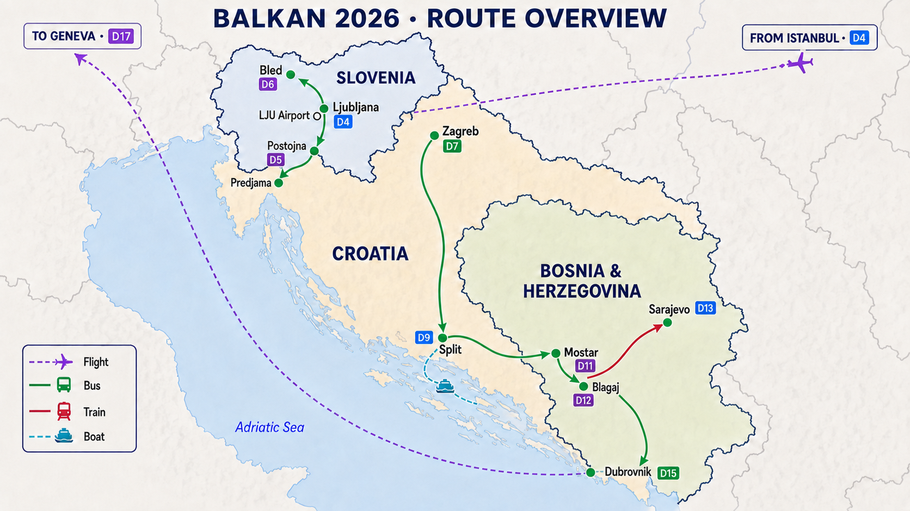

QUICK CONVERT
價格換算
約台幣
—
取得匯率中…
Rates by ExchangeRate-API

固定支出＋每日消費
Flights · Notes · Offline
AirLabs 金鑰只儲存在目前裝置，不會寫進 GitHub。即時航廈、登機門、預估時間與延誤通常在起飛前約 10 小時內才會出現。
Day 0、行程、預算、勾選進度、最近一次天氣與最近一次匯率會留在裝置；Google Maps 導航與即時更新仍需要網路。